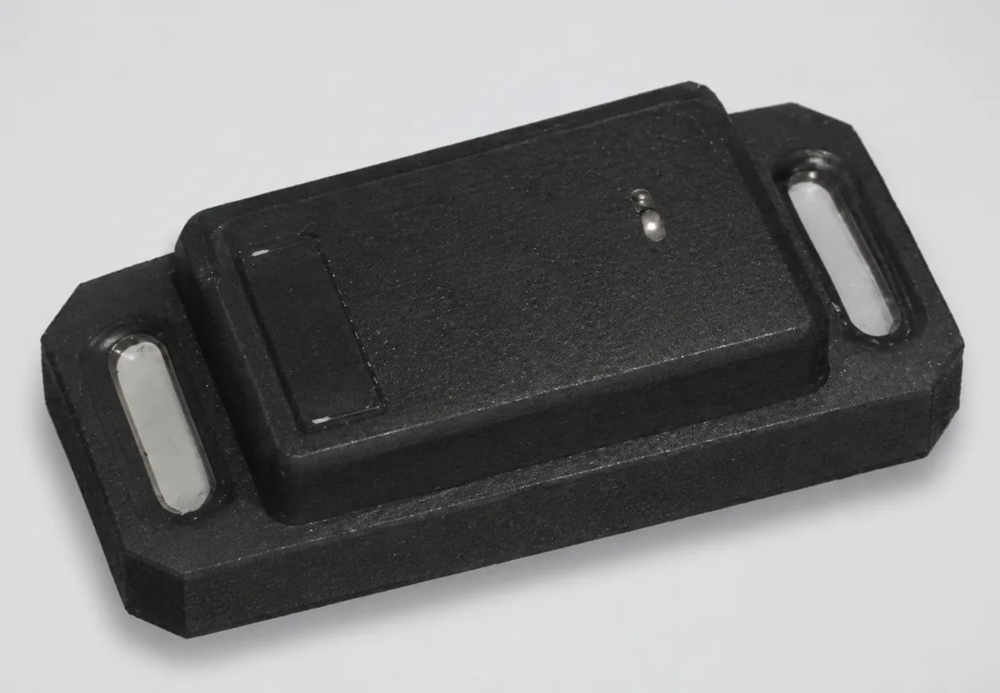
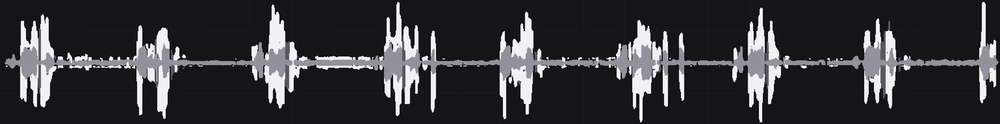
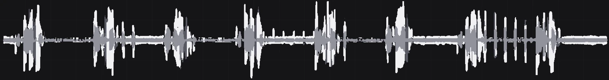
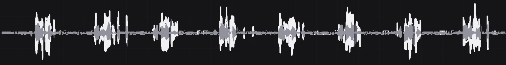

01 / Industrial IoT · Sensing & Diagnostics
Before it breaks.
The machine tells you first.
A predictive maintenance sensor that mounts on equipment and catches early signs of failure through vibration and ultrasound.
We designed the sensor board circuit and layout and the RS-485 communication. The sensor is in use on equipment at Company S and Company L.
- 25 × 49 × 15mm
- Sensor enclosure
- 3.2kHz
- Vibration measurement (6kHz type available)
- 80kHz
- Ultrasound bandwidth (combined type)
- RS-485
- Two-way link to the gateway
01 / Why Predictive
Failures don't come out of nowhere.
They send signals first.
Equipment problems show up in a sequence: ultrasound, vibration, noise and power, then heat. Ultrasound and vibration change months before a failure, noise and power weeks before, heat only days before. The earlier the stage you catch, the more room you have to plan maintenance and the lower the repair cost.
02 / Design Scope
One small enclosure.
Sensors and communication together.
We designed the sensor board circuit and layout, and the RS-485 communication with the gateway.


The actual sensor · left, next to a 100-won coin for scale. Mounts with a magnet or bolts.
- 01
Multi-sensor board circuit
A 3-axis vibration sensor and a 2-axis inclinometer as standard, with optional ultrasound, temperature and other sensors depending on the type, all on one board.
- 02
Compact layout
Component placement and routing designed to fit a 25 × 49 × 15mm enclosure.
- 03
RS-485 multi-drop
Several sensors share one line, each identified by its own ID (A001, A002 …).
- 04
Two-way communication
The sensor sends its measurements when the gateway asks, and the gateway sends settings such as sampling rate, range and acquisition time down to the sensor.
- 05
Industrial power input
DC 24V / 12V input, operating temperature −40 to 80°C.
03 / System
Sensors on the floor.
Decisions at the gateway and server.
The sensors measure vibration and ultrasound on the equipment, and the gateway collects data from several sensors over RS-485 and passes it to the server.
- RequestThe gateway requests data from a sensor by its ID.
- SendThat sensor sends its measured and processed values over RS-485.
- UploadThe gateway uploads the collected data to the IIoT server.
- ConfigureThe server and gateway send new measurement settings down to the sensor.
Time domain
- Acceleration data (FIFO · high-pass filter)
- Velocity RMS (X · Y · Z)
- Acceleration peak (X · Y · Z)
Overall vibration level and momentary shocks, per axis.
Frequency domain
- Overlapping · windowing
- FFT
- Averaging
- Rescaling
How strong the vibration is at each frequency.
Calculated inside the sensor. Sampling rate, range and acquisition time are set at installation.
04 / Specifications
Small size.
Measurement you can configure.
Types
- 3kHz typeVibration 3kHz
- 6kHz typeVibration 6kHz
- Combined 3kHzVibration 3kHz · ultrasound 80kHz
- Combined 6kHzVibration 6kHz · ultrasound 80kHz
Standard specifications (3kHz type)
Vibration
- Frequency
- 3.2kHz (resonance X · Y 3.0kHz, Z 2.2kHz)
- Sampling rate
- 13 to 6,660Hz (10 steps)Set at install
- Range
- ±2 · ±4 · ±8 · ±16gSet at install
- Resolution
- 0.061 to 0.488 mg/LSB (by range)
- Frequency resolution
- 128 to 1,024Set at install
- Acquisition time
- 500 to 60,000msSet at install
- Overlap
- 5 to 95%
- Window
- Rectangular · Hanning · Hamming · Flat Top
Inclinometer
- Axes
- X · Y
- Range
- ±0.5 · ±1 · ±2 · ±3gSelectable
- Temperature stability
- Below 0.075mg/°C
General
- Communication
- RS-485 (two-way with the gateway)
- Power
- DC 24V / 12V
- Operating temperature
- −40 to 80°C
- Size · mounting
- 25 × 49 × 15mm · magnet or bolts
Optional sensors · interfaces
- Shock
- ±100 · ±200 · ±400g
- Temperature
- ±0.5°C (−40 to 125°C)
- Sound · ultrasound
- 100Hz to 80kHz
- Humidity
- ±3.5%rH (20 to 80%rH)
- Pressure
- 260 to 1,260hPa (absolute)
- Tilt
- 0.076mg/digit
- Wired interface
- RS-485 or 10BASE-T1L (10Mbps · up to 1km)
05 / Field Data
Same machine.
Different waveforms.
A test on a linear stage: the sensor was attached and 3-axis vibration was compared between the normal state and three fault states. Each fault changes where the vibration rises and how it repeats.
- Normal

- Broken retainer2 blocks
- No grease4 blocks

- 4–5 balls removed2 blocks


3-axis vibration · linear stage test. White, gray and dark gray are the three measurement axes.
Telling faults apart by ultrasound
Each fault shows up in a different frequency band with a different FFT pattern.
| Symptom | Frequency band | FFT pattern | Typical cause |
|---|---|---|---|
| Early bearing wear | 20 to 30kHz | Steady, repeating high-frequency amplitude in a narrow band | Fine ball-bearing damage, poor lubrication |
| Rotating friction | 25 to 40kHz | Continuous high amplitude, fixed to a specific band | Shaft friction, poor brush contact, wear |
| Bearing crack · rupture | 30 to 45kHz | Irregular, high spike-shaped peaks | Outer or inner race cracks, early breakage |
| Air · gas leak | 35 to 50kHz | Sustained high frequency across a wide band (looks like noise) | Air, CO₂ or steam pressure leaks |
| Electrical spark · arc | 40 to 60kHz and above | Momentary, random high-amplitude peaks across a wide band | Sparks, discharge, electrical ripple, leakage current |
- 53kHzPower supply switching frequency
- 40kHzUltrasonic sensor in operation
- 27kHzArcing
Examples detected with the ultrasound sensor.
06 / Applications
For machines that can't stop.
Mounted first.
In use on equipment at Company S and Company L.
From Sensor to System
Need a sensor for your equipment?
Start with what you want to measure.
We review the signal, the installation environment and the interface with you.